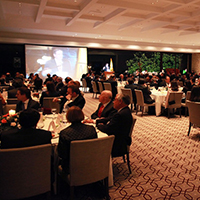

Secretaría General
Recopilación de las principales decisiones y temas tratados por el Comité Directivo y el Consejo Académico, entre el 22 de agosto de 2013 y el 20 de noviembre de 2013. Así mismo, se incluyen algunos hechos de interés.
| Si no puede ver correctamente el contenido de este mensaje, por favor siga este enlace. Contacto: secgral@uniandes.edu.co |
|
| Boletín electrónico de la Universidad de los Andes - No. 35 - Diciembre de 2013 Secretaría General |
| Carta del Rector al Consejo Superior No. 67-13 Recopilación de las principales decisiones y temas tratados por el Comité Directivo y el Consejo Académico, entre el 22 de agosto de 2013 y el 20 de noviembre de 2013. Así mismo, se incluyen algunos hechos de interés. |
| NOTICIAS | |||||
Libro Blanco sobre Educación Superior“La Universidad de los Andes ofrece al país este libro para enriquecer el debate sobre educación superior en Colombia y poner en primer plano los puntos centrales que no han sido analizados y que la sociedad colombiana debe discutir, más allá de un interés por reducir el debate a los puntos críticos de cada grupo involucrado o en beneficio del poder corporativo o de una determinada fuerza política en particular”. Descripción tomada de la contraportada del Libro. |
|||||
Daniel Bermúdez, profesor eméritoEl arquitecto Daniel Bermúdez Samper fue nombrado profesor emérito por el Consejo Académico, en su sesión del 31 de octubre de 2013. Bermúdez ha sido profesor del Departamento de Arquitectura desde 1975, y es miembro del grupo de investigación en Arquitectura, Ciudad y Educación (ACE). También ha participado en diferentes proyectos y cuerpos profesorales. Su propuesta ganó el concurso para la creación del nuevo centro de convenciones de Bogotá. Clic para ver más de la trayectoria del arquitecto Daniel Bermúdez. |
|||||
|  | Cena Quiero EstudiarCerca de 300 invitados, entre líderes empresariales, políticos y académicos, participaron de la cena a beneficio del Programa Quiero Estudiar, que apoya financieramente a estudiantes excelentes académicamente que no pueden pagar su carrera en la Universidad de los Andes. Entre los asistentes estuvieron Diego Pizano Salazar (presidente del Consejo Superior), Eduardo Pacheco (miembro del Comité Directivo), María Fernanda Campo (ministra de Educación), Mauricio Cárdenas (ministro de Hacienda), entre otros. La cena se realizó en el Country Club, en Bogotá, el pasado 30 de octubre y se recaudaron 1.500 millones de pesos. |
||||
Apuesta por la OrinoquíaEl 10 de octubre de 2013 se realizó el lanzamiento del Centro de Estudios de la Orinoquía (CEO), en la Sala de Exposiciones (edificio Santo Domingo), con la exposición ‘Amazonia perdida, el viaje fotográfico del legendario botánico Richard Evans Schultes’. |
|||||
|
|||||